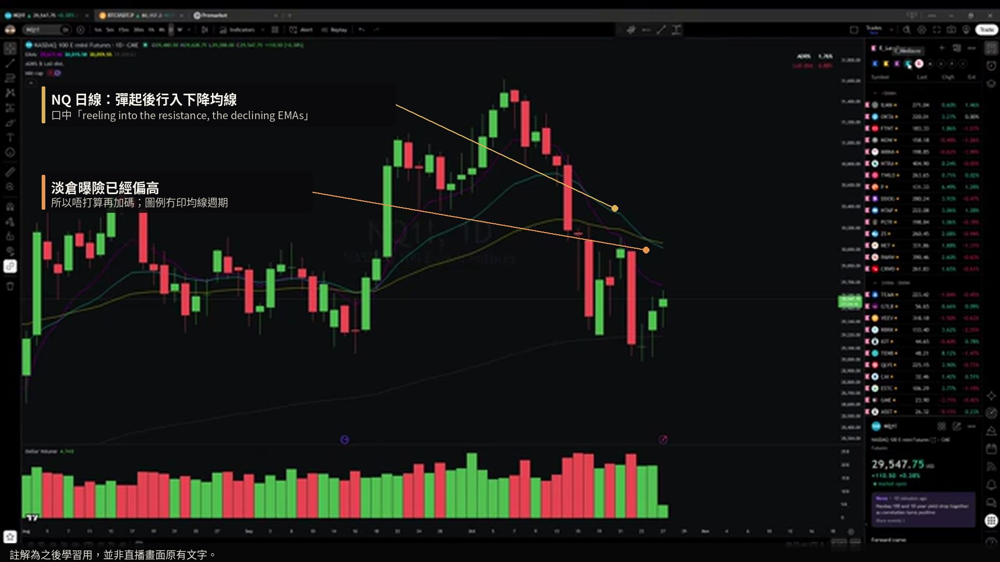
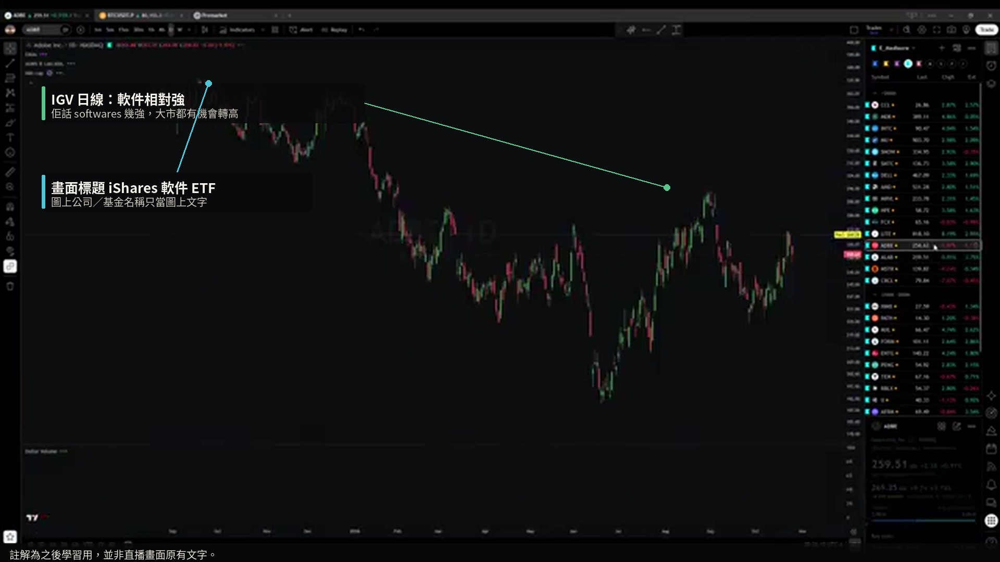
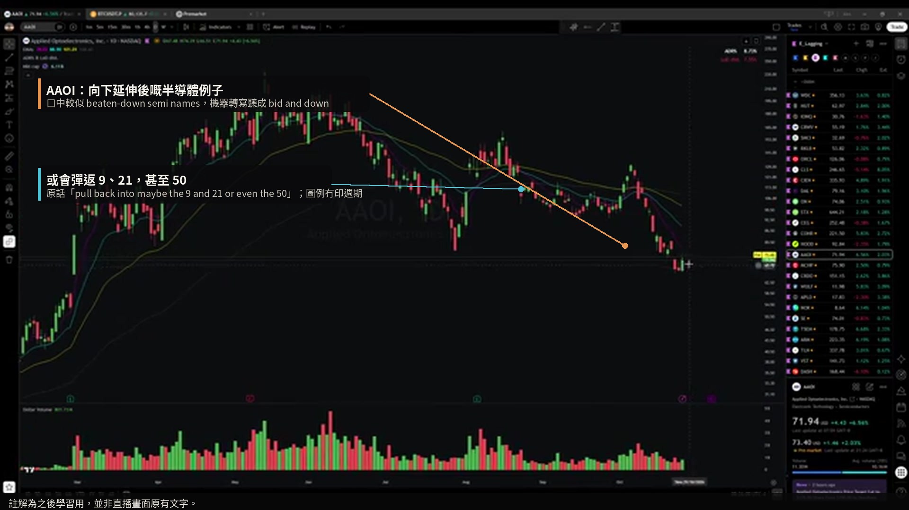

概要
開場先讀大市位置，再解釋點解唔加碼
06:11 開始，佢話今日未見到好多嘢，雖然大市彈高少少，但而家行入阻力、就係下降中嘅 EMAs。自己淡倉曝險已經偏高，所以唔打算再加碼。同時軟件幾強，大市都有機會轉高。一啲捱沽嘅半導體已經向下有少少延伸，或會彈返 9、21，甚至 50。
畫面先係 NQ 日線，之後睇 IGV、AAOI。Whisper 把 beaten-down semi names 聽成 bid and down semi names。圖例冇印均線週期。
圖一
NQ 日線：彈起後行入下降均線
直播 06:25

原話
Not seeing much today, although the market is bouncing high a little bit, but it's now reeling into the resistance, the declining EMAs, but I've already got pretty high exposure on the short side, so I'm not gonna double down on this one I guess.
今日未見到好多嘢。雖然大市彈高少少，但而家行入阻力，就係下降中嘅 EMAs。我淡倉嗰邊曝險已經偏高，所以估唔會再喺呢個位置加碼。
點樣讀
呢一步係先讀大市位置，再解釋點解唔加淡倉。原話係行入下降均線嘅阻力，而唔係已經確認轉勢。
畫面係 NQ#1 日線（Nasdaq 100 E-mini）。圖例冇印均線週期；下降 EMAs 以口中同位置為準。
圖二
IGV：軟件偏強，大市有機會轉高
直播 07:10

原話
And also like the softwares are pretty strong, there's the chance that the market can turn higher.
而且軟件幾強，大市都有機會轉高。
點樣讀
軟件強係佢唔加碼嘅另一個理由：大市仍有轉高嘅可能。
畫面標題寫住 iShares 軟件 ETF，只當圖上文字。
圖三
AAOI：捱沽嘅半導體或會彈返 9、21 甚至 50
直播 07:00

原話
And with together with some like bid and down semi names, some are a little bit overextended to the downside, that could have, like, that could get a pull back into the maybe the 9 and 21 or even the 50.
再加埋一啲捱沽嘅半導體，有啲已經向下有少少延伸，噉或會彈返大概 9 同 21，甚至 50。
Whisper 寫成 bid and down semi names；對照語境同 AAOI 畫面，較合理嘅聽法係 beaten-down semi names。9、21、50 以口中為準，圖例冇印週期。
點樣讀
呢度唔係叫即刻淡 AAOI，而係話呢類已經向下延伸嘅半導體，有機會彈返均線。
畫面標題 Applied Optoelectronics，只當圖上文字。
附註
注意事項
- 開場 03:45–06:10 係問候同空白，唔單獨成科。06:50 前後亦掃過 PANW，作為軟件偏強嘅例子，重點用 IGV 出圖。
- 07:39–07:55 只有一句「maybe SpaceX short」，並翻到 SPCX 日線，冇展開讀圖，唔單獨成科。